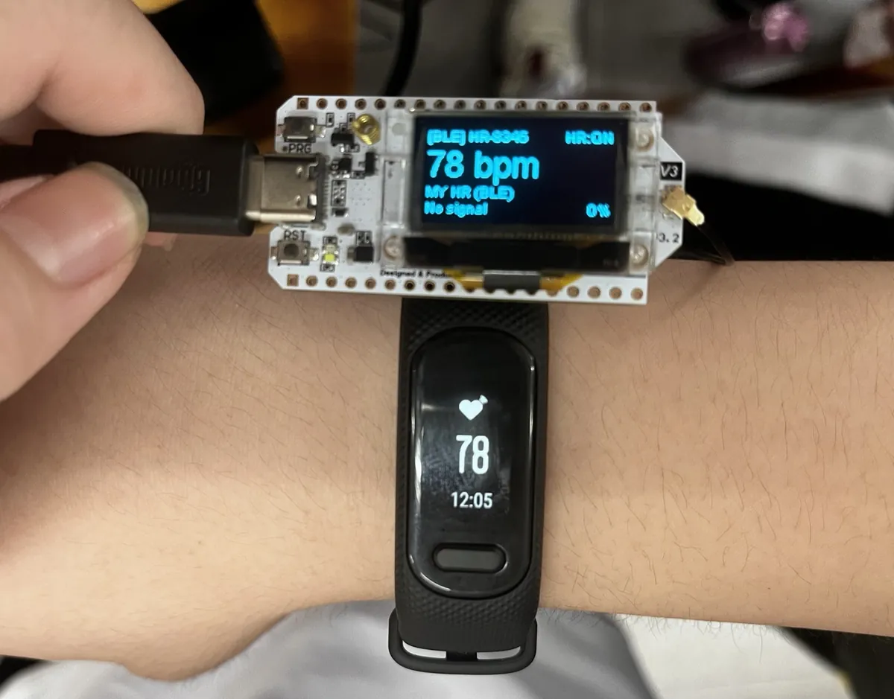

以 MRT 零件構成本體，MRT UNO X 為主控 —— 讀取感測器、封裝資料並排程發送。 心率／血氧感測器即時回傳受困者的生命徵象；外掛的小型 LoRa 無線模組提供長距離、低功耗的資料鏈路。
Body built with MRT parts; MRT UNO X is the main controller — it reads sensors, packs the data, and schedules transmission. Heart rate / SpO₂ sensors send victims’ vital signs in real time, and a small add-on LoRa module gives long-range, low-power data links.
主控ControllerMRT UNO X
生理感測Vital signs心率 / 血氧Heart rate / SpO₂
無線WirelessLoRa 外掛模組LoRa add-on module
本體BodyMRT 零件MRT parts
電池續航Battery life約 120 小時（一般回報）~120 h (normal duty)

待放檔案File missing
把照片存成
assets/sbn.jpg 就會自動顯示。
Save the photo as assets/sbn.jpg and it appears automatically.